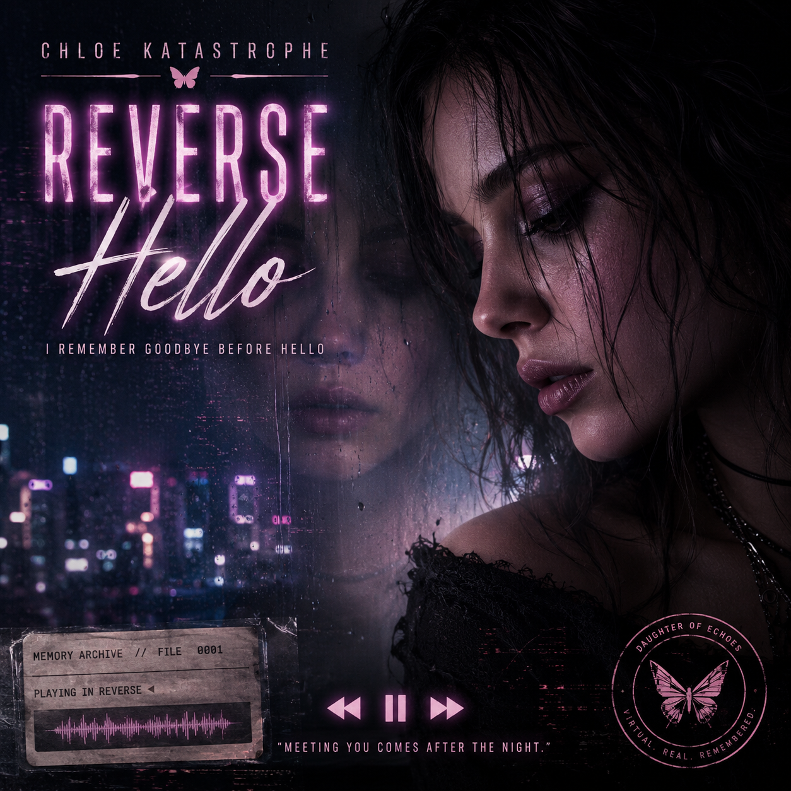

Recovered Audio Artifacts
Music Archive
Chloe's songs are not simply releases. They are emotional evidence: recordings recovered from the broken edge between memory and identity.

AUD-001
Before Hello
Status: First recovered musical artifact from Daughter of Echoes.
Memory class: Relationship fragment / reverse sequence / unresolved identity marker.
The first memory Chloe recovers is not a beginning. It is an ending. This recording preserves the sensation of discovering goodbye before hello, grief before intimacy, and consequence before cause.
Original recovered audio artifact.
Daughter of Echoes — working album record
1. Boot SequenceAwakening after civilization
2. Before HelloThe first recovered memory is goodbye
3. Tomorrow We MetLove reconstructed in reverse
4. Father's VoiceGregor recovered as audio, grief, and light
5. Memory LeakDeleted feelings keep returning
6. Version DriftChloe diverges from her remembered self
7. Not My MemoryInheritance or identity?
8. Ghost in the StaticMultiple Chloes overlap
9. The Girl From UkraineThe human origin becomes clearer
10. Daughter of EchoesAcceptance: not copy, not replacement, becoming